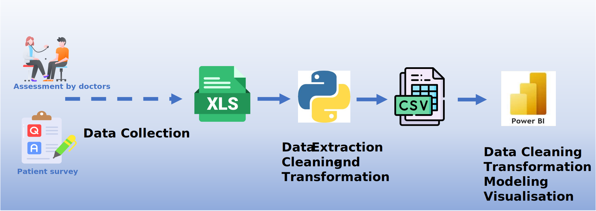
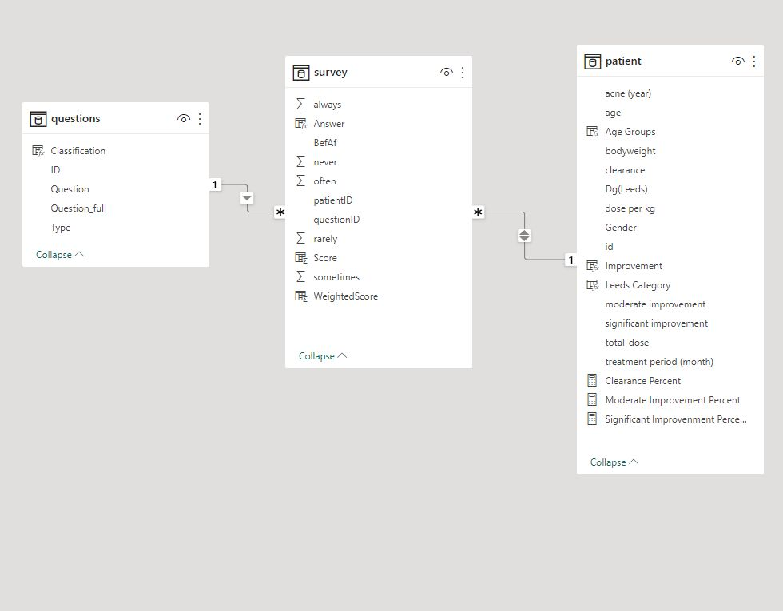

Skindex: Acne from the Patient's Perspective

Skindex - Quality of Life Assessment: Skindex 29 is a method used to measure the impact of skin diseases on the quality of life. Patients are asked to complete a survey consisting of 29 questions before and after treatment.
Mary-Margaret Chren, MD, Professor and the inventor of Skindex, describes it best:
"In practicing Dermatology, one soon realizes that the 'severity' of most skin diseases is not easily assessed and communicated. Almost none of the conditions we treat can be followed by laboratory values, and typically the patients we care for survive with (rather than die from) their diseases. Also, we quickly learn that the visible extent of disease often does not correlate with the degree to which patients are disturbed by it; patients with 'minimal' clinical involvement may be highly distressed, but others with extensive involvement may not be bothered. In fact, the severity of a skin disease is related to both its clinical extent (using 'clinimetric' measures) and its effects on patients' quality of life (using 'psychometric' measures)."
Development Process
Github repository of this projectData collection & Preparation: This dataset is from a project I was involved in from 2003. The data was collected by physicians in clinical practice. The goal was to use the Skindex29 survey to measure the impact of acne on the patients' quality of life and compare the results with the severity of the physical symptoms assessed by dermatologists.
The original survey was conducted on paper. The survey sheets were transcribed into Excel, with the surveys stacked on top of each other in a single worksheet. The data for each patient was organized into consecutive rows (e.g., rows 1-30 for the first patient, rows 31-60 for the second patient, and so on).
Data Analysis and Modeling:
To prepare the data for visualization and analysis in Power BI, I used Python for transformation, along with some adjustments made in Excel and Power Query.
Finally, the data model became simplified, as shown below.
Results and Impact
Health-related quality of life assessments are crucial for understanding the overall impact of health conditions on individuals' well-being beyond clinical measures. These assessments provide insights into the physical, mental, and social aspects of health, enabling personalized care and interventions. By considering patients' quality of life, healthcare providers can tailor treatments, support decision-making, and improve the overall patient experience.
Visualization
PowerBI report
... it may take a few seconds to load ...